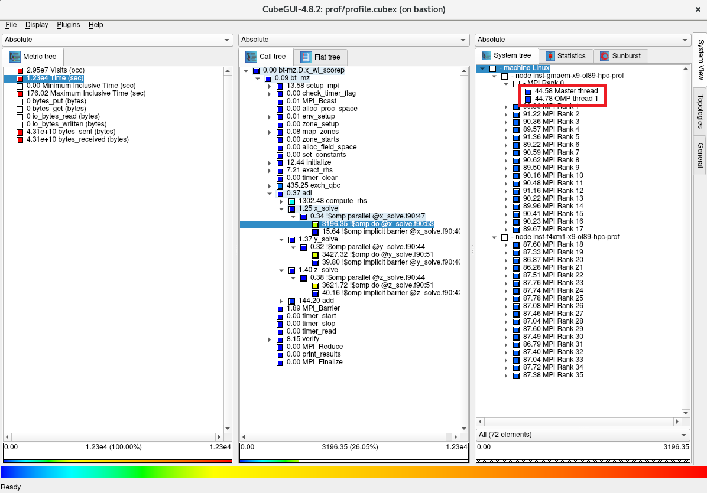

並列アプリケーションは、ロードバランス不均衡やプロセス間通信の影響等で並列実行数の増加と共にスケーラビリティの低下が発生しますが、HPCワークロードの実行に最適なベアメタル・インスタンスでアプリケーションを高並列実行する場合、高価な計算資源を有効活用する観点から、スケーラビリティ低下の原因を調査しチューニングでスケーラビリティーを改善する開発プロセスを踏んだり、最も効率的な並列実行数を見極める必要があり、これらの判断に必要な情報を得るためにアプリケーションをプロファイリングすることが重要です。
Score-P は、HPCアプリケーションの並列プログラミングに於けるデファクトスタンダードであるOpenMPやMPIで記載された並列アプリケーションに対し、プロファイリング手法やトレーシング手法を用いてスケーラビリティー改善に有益な情報を提供するオープンソースのプロファイリングツールです。
また CubeGUI は、 Score-P が出力するプロファイリング手法のデータを可視化するGUIツールで、並列アプリケーションのプロファイリング情報を視覚的に判断することを可能にします。
本プロファイリング関連Tipsは、 ベアメタル・インスタンス 上で実行するOpenMPやMPIでコーディングされた並列プログラムを Score-P と CubeGUI でプロファイリングし、並列アプリケーションを効果的に実行するための有益な情報を取得する方法を解説します。
0. 概要
Score-P は、HPCに於ける高並列アプリケーションをスケーラブルで簡易にプロファイリング（※1）することを目的に開発され、以下の代表的な並列プログラミングモデルに対応しています。
- スレッド並列
- OpenMP
- Pthreads
- プロセス並列
- MPI
- SHMEM
- GPU並列
- CUDA
- OpenCL
- OpenACC
また Score-P は、並列アプリケーションの評価指標を統計的に扱うプロファイリング手法（※1）と、これらの評価指標を時間情報と共に扱うトレーシング手法の何れにも対応しており、解析用途に合わせたプロファイリングが可能です。
※1）本テクニカルTipsでは、性能向上を目的とした並列アプリケーションの性能解析プロセス全般を プロファイリング と呼称し、この中で評価指標を統計的に扱う プロファイリング の1つの方法を プロファイリング手法 と呼称します。これに対し、評価指標を時間情報と共に扱う プロファイリング の1つの方法を トレーシング手法 と呼称します。
Score-P が出力するプロファイリング手法用のデータは、これを CubeGUI で読み込むことで、対象の並列アプリケーションを以下の3評価軸で表示し、
- 評価指標
- CPU時間
- MPI通信データ量
- I/Oデータ量
- コールツリー
- サブルーチン・関数
- MPI関数
- OpenMPループ
- システム位置
- ノード
- MPIプロセス
- OpneMPスレッド
以下のようにGUIで視覚的に表示することで、

以下のような観点での並列アプリケーションのプロファイリングが可能になります。
- MPI通信によるスケーラビリティへの影響
- MPI通信が全体に対してどの程度の時間を占めているか
- 最も通信データ量の多いMPI関数は何か
- 各MPIプロセスのMPI通信データ量に偏りがあるか
- ロードバランス不均衡によるスケーラビリティへの影響
- MPIで並列化されたループの実行に各計算ノードがそれぞれどの程度時間を要しているか
- MPIで並列化されたループの実行に各MPIプロセスがそれぞれどの程度時間を要しているか
- OpenMPで並列化されたループの実行に各OpenMPスレッドがそれぞれどの程度時間を要しているか
- ホットスポットの特定
- 最も時間を要しているサブルーチンはどこか
- 最もMPI通信データ量の多いMPI関数はどのサブルーチンから呼ばれているか
- I/Oによるスケーラビリティへの影響
- I/Oがどの程度の時間を要しているか
また Score-P は、単独で利用するだけでなく、以下のプロファイリングツールと連携して動作するよう作られており、 プロファイリング手法 と トレーシング手法 を組合せた様々なプロファイリングニーズにこたえられるよう作られています。
本プロファイリング関連Tipsは、 Score-P と CubeGUI でプロファイリング手法を使用する並列アプリケーションのプロファイリング手順を以下に沿って解説します。
なおプロファイリング対象の並列アプリケーションは、 NAS Parallel Benchmarks を使用します。
- HPCクラスタ構築
- 前提条件ソフトウェアインストール・セットアップ
- Score-P インストール・セットアップ
- CubeGUI インストール・セットアップ
- Score-P でプロファイリング手法データを取得
- Score-P と CubeGUI でプロファイリング手法データを解析
各ソフトウェアは、以下のバージョンを前提とします。
- OS ： Oracle Linux 8.9ベースのHPC クラスタネットワーキングイメージ （※2）
- OpenMPI ：5.0.3
- Score-P ：8.4
- CubeGUI ：4.8.2
※2）OCI HPCテクニカルTips集 の クラスタネットワーキングイメージの選び方 の 1. クラスタネットワーキングイメージ一覧 のイメージ No.1 です。
本プロファイリングTipsで使用するHPCクラスタは、 クラスタ・ネットワーク に接続する BM.Optimized3.36 2ノードをプロファイリング対象の並列アプリケーションを Score-P と共に実行する計算ノードとし、Bastionノード1ノードを計算ノードで採取したプロファイリングのデータを CubeGUI で解析するフロントエンド用途のノードとして構築します。
ここで CubeGUI がX11ベースのアプリケーションのため、この操作画面を表示するXサーバの稼働する CubeGUI 操作端末を用意します。
1. HPCクラスタ構築
本章は、本プロファイリングTipsで使用するHPCクラスタを構築します。
この構築手順は、 OCI HPCチュートリアル集 の HPCクラスタを構築する(基礎インフラ手動構築編) の手順に従い実施します。
この際、計算ノードとBastionノードを以下のように構成します。
- 計算ノード ブート・ボリューム サイズ ： 100GB以上（インストールするソフトウェアの容量確保のため）
- 計算ノードSMT : 無効（※3）
- Bastionノード ブート・ボリューム サイズ ： 100GB以上（インストールするソフトウェアの容量確保のため）
- Bastionノードコア数 ： 8コア（ CubeGUI のコンパイル高速化のため）
※3）SMTを無効化する方法は、 OCI HPCパフォーマンス関連情報 の パフォーマンスに関連するベアメタルインスタンスのBIOS設定方法 を参照してください。
2. 前提条件ソフトウェアインストール・セットアップ
本章は、本プロファイリングTipsで使用する Score-P の前提条件ソフトウェアとして、計算ノードに OpenMPI をインストール・セットアップします。
この方法は、 OCI HPCテクニカルTips集 の Slurm環境での利用を前提とするOpenMPI構築方法 を参照してください。
なお本章の作業は、全ての計算ノードで実施します。
3. Score-Pインストール・セットアップ
本章は、 Score-P を計算ノードにインストールし、利用に必要な環境設定を行います。
なお本章の作業は、全ての計算ノードに実施します。
-
以下コマンドをopcユーザで実行し、 Score-P の前提条件ソフトウェアを提供するyumレポジトリを追加します。
$ sudo yum-config-manager --enable ol8_codeready_builder ol8_developer_EPELなお、上記コマンド実行時に以下のメッセージが出力される場合、
This system is receiving updates from OSMS server. Error: No matching repo to modify: ol8_developer_EPEL.OSのパッケージ管理が OS管理サービス で行われているため、以下コマンドをopcユーザで実行し、これを解除した後に再度yumレポジトリを追加します。
ここで実施する OS管理サービス の解除は、10分程度の時間が経過すると自動的に OS管理サービス 管理に戻ります。$ sudo osms unregister $ sudo yum-config-manager --enable ol8_codeready_builder ol8_developer_EPEL -
以下コマンドをopcユーザで実行し、 Score-P の前提条件ソフトウェアをインストールします。
$ sudo dnf install -y binutils-devel libunwind libunwind-devel gcc-plugin-devel llvm-devel clang-devel -
以下コマンドをopcユーザで実行し、 Score-P をインストールします。
これにより、 Score-P が /opt/scorep にインストールされます。$ cd ~; wget https://perftools.pages.jsc.fz-juelich.de/cicd/scorep/tags/scorep-8.4/scorep-8.4.tar.gz $ tar -xvf ./scorep-8.4.tar.gz $ cd scorep-8.4; ./configure $ make -j 36 && sudo make install -
以下コマンドをopcユーザで実行し、 Score-P 実行に必要な環境変数を設定します。
$ echo "export PATH=\$PATH:/opt/scorep/bin" | tee -a ~/.bashrc $ source ~/.bashrc
4. CubeGUIインストール・セットアップ
本章は、 CubeGUI をBastionノードにインストールし、利用に必要な環境設定を行います。
-
以下コマンドをopcユーザで実行し、 CubeGUI の前提条件ソフトウェアである Qt の前提条件ソフトウェアを提供するyumレポジトリを追加します。
$ sudo yum-config-manager --enable ol8_codeready_builder ol8_developer_EPELなお、上記コマンド実行時に以下のメッセージが出力される場合、
This system is receiving updates from OSMS server. Error: No matching repo to modify: ol8_developer_EPEL.OSのパッケージ管理が OS管理サービス で行われているため、以下コマンドをopcユーザで実行し、これを解除した後に再度yumレポジトリを追加します。
ここで実施する OS管理サービス の解除は、10分程度の時間が経過すると自動的に OS管理サービス 管理に戻ります。$ sudo osms unregister $ sudo yum-config-manager --enable ol8_codeready_builder ol8_developer_EPEL -
以下コマンドをopcユーザで実行し、 CubeGUI の前提条件ソフトウェアである Qt の前提条件ソフトウェアをインストールします。
$ sudo dnf install -y cmake mesa-libGL mesa-libGL-devel mesa-dri-drivers git xauth xcb-proto xcb-util-devel xcb-util-wm xcb-util-wm-devel xcb-util-cursor xcb-util-cursor-devel libXrender-devel xcb-util-keysyms xcb-util-keysyms-devel libxkbcommon-devel libxkbcommon-x11 libxkbcommon-x11-devel fontconfig-devel freetype-devel libXext-devel libSM-devel libICE-devel -
以下コマンドをopcユーザで実行し、 CubeGUI の前提条件ソフトウェアである Qt をインストールします。
これにより、 Qt が /usr/local/Qt-5.15.13 にインストールされます。
なお、makeコマンドの並列数はBastionノードのコア数に合わせて調整します。
また本手順は、30分程度を要します。$ cd ~; git clone https://code.qt.io/qt/qt5.git $ cd qt5; git checkout 5.15 $ perl init-repository $ ./configure -opensource -confirm-license -nomake examples -nomake tests $ make -j 16 && sudo make install -
以下コマンドをopcユーザで実行し、 CubeGUI の前提条件ソフトウェアである CubeLib をインストールします。
$ cd ~; wget https://apps.fz-juelich.de/scalasca/releases/cube/4.8/dist/cubelib-4.8.2.tar.gz $ tar -xvf ./cubelib-4.8.2.tar.gz $ cd cubelib-4.8.2; ./configure $ make -j 16 && sudo make install -
以下コマンドをopcユーザで実行し、 CubeGUI をインストールします。
これにより、 CubeGUI が /opt/cubegui にインストールされます。
なお、makeコマンドの並列数はBastionノードのコア数に合わせて調整します。$ cd ~; wget https://apps.fz-juelich.de/scalasca/releases/cube/4.8/dist/cubegui-4.8.2.tar.gz $ tar -xvf ./cubegui-4.8.2.tar.gz $ cd cubegui-4.8.2; ./configure --with-qt=/usr/local/Qt-5.15.13/bin --with-cubelib=/opt/cubelib/bin $ make -j 16 && sudo make install -
以下コマンドをopcユーザで実行し、 CubeGUI 実行に必要な環境変数を設定します。
$ echo "export PATH=\$PATH:/usr/local/Qt-5.15.13/bin:/opt/cubegui/bin" | tee -a ~/.bashrc $ source ~/.bashrc -
Xサーバの稼働する CubeGUI 操作端末から以下コマンドを実行し、Xフォワードを有効にしてBastionノードにログインします。
$ ssh -X bastion_IP Activate the web console with: systemctl enable --now cockpit.socket Last login: Tue Apr 23 10:35:11 2024 from x.y.z.w /usr/bin/xauth: file /home/opc/.Xauthority does not exist $ printenv DISPLAY localhost:10.0 $ -
以下コマンドをopcユーザで実行し、
$ cube以下のように CubeGUI のスタート画面が起動することを確認します。

5. Score-Pでプロファイリング手法データを取得
本章は、NAS Parallel Benchmarks をプロファイリング対象とし、 Score-P でプロファイリング手法を使用してプロファイリングデータを取得します。
ここでは、ノードあたり36コアを搭載する BM.Optimized3.36 を2ノード使用することから、36 MPIプロセス・2 OpenMPスレッドの組み合わせを使用します。
この際、プロファイリングによるオーバーヘッド発生を考慮した上で精度の良いプロファイリングデータを取得するため、以下の手順でこれを実施します。
- NAS Parallel Benchmarks バイナリの作成
- プロファイリングデータを取得しない場合の実行時間を計測
- プロファイリングデータを取得した場合の実行時間を計測
- 両者に隔たりがある場合プロファイリング対象を限定するフィルタを作成
- フィルタを適用してプロファイリングデータを取得した場合の実行時間を計測
- 先の実行時間の隔たりが解消したことを確認
本手順は、計算ノードのうちの1ノードで実施します。
-
以下コマンドをopcユーザで実行し、プロファイリングデータを取得しない NAS Parallel Benchmarks のバイナリ（bt-mz.C.x_wo_scorep）とプロファイリングデータを取得する NAS Parallel Benchmarks のバイナリ（bt-mz.C.x_wi_scorep）を作成します。
$ cd ~; wget https://www.nas.nasa.gov/assets/npb/NPB3.4.2-MZ.tar.gz $ tar -xvf ./NPB3.4.2-MZ.tar.gz $ cd NPB3.4.2-MZ/NPB3.4-MZ-MPI $ cp config/make.def.template config/make.def $ make bt-mz CLASS=C $ mv bin/bt-mz.C.x bin/bt-mz.C.x_wo_scorep $ sed -i 's/^FC =/FC = scorep/g' config/make.def $ diff config/make.def.template config/make.def 32c32 < FC = mpif90 --- > FC = scorep mpif90 $ make clean $ make bt-mz CLASS=C $ mv bin/bt-mz.C.x bin/bt-mz.C.x_wi_scorep -
以下コマンドをopcユーザで実行し、プロファイリングデータを取得しない場合の実行時間を計測します。
$ mpirun -n 36 -N 18 -hostfile ~/hostlist.txt -mca coll_hcoll_enable 0 -x OMP_NUM_THREADS=2 -x UCX_NET_DEVICES=mlx5_2:1 --bind-to none ./bin/bt-mz.C.x_wo_scorep | grep "Time in seconds" Time in seconds = 7.92 $ -
以下コマンドをopcユーザで実行し、プロファイリングデータを取得した場合の実行時間を計測します。
$ mpirun -n 36 -N 18 -hostfile ~/hostlist.txt -mca coll_hcoll_enable 0 -x OMP_NUM_THREADS=2 -x UCX_NET_DEVICES=mlx5_2:1 -x SCOREP_EXPERIMENT_DIRECTORY=/home/opc/prof --bind-to none ./bin/bt-mz.C.x_wi_scorep | grep "Time in seconds" Time in seconds = 15.52 $ -
両者の差に約2倍の隔たりがあるため、以下のコマンドをopcユーザで実行し、プロファイリングのオーバーヘッドの原因を調査します。
$ scorep-score -r /home/opc/prof/profile.cubex | head -30 Estimated aggregate size of event trace: 160GB Estimated requirements for largest trace buffer (max_buf): 5GB Estimated memory requirements (SCOREP_TOTAL_MEMORY): 5GB (warning: The memory requirements cannot be satisfied by Score-P to avoid intermediate flushes when tracing. Set SCOREP_TOTAL_MEMORY=4G to get the maximum supported memory or reduce requirements using USR regions filters.) flt type max_buf[B] visits time[s] time[%] time/visit[us] region ALL 4,897,406,179 6,580,857,249 1106.03 100.0 0.17 ALL USR 4,890,409,524 6,574,838,897 529.54 47.9 0.08 USR OMP 6,511,888 4,868,608 521.74 47.2 107.16 OMP MPI 944,158 420,408 52.60 4.8 125.13 MPI COM 591,890 729,300 2.14 0.2 2.93 COM SCOREP 41 36 0.00 0.0 16.44 SCOREP USR 1,572,017,382 2,110,313,472 242.56 21.9 0.11 binvcrhs USR 1,572,017,382 2,110,313,472 176.71 16.0 0.08 matmul_sub USR 1,572,017,382 2,110,313,472 93.15 8.4 0.04 matvec_sub USR 68,157,492 87,475,200 8.65 0.8 0.10 lhsinit USR 68,157,492 87,475,200 5.55 0.5 0.06 binvrhs USR 50,806,080 68,892,672 2.90 0.3 0.04 exact_solution OMP 559,584 205,824 0.03 0.0 0.15 !$omp parallel @exch_qbc.f90:206 OMP 559,584 205,824 0.03 0.0 0.15 !$omp parallel @exch_qbc.f90:217 OMP 559,584 205,824 0.03 0.0 0.15 !$omp parallel @exch_qbc.f90:245 OMP 559,584 205,824 0.03 0.0 0.16 !$omp parallel @exch_qbc.f90:256 MPI 411,447 139,896 0.20 0.0 1.40 MPI_Irecv MPI 411,447 139,896 0.47 0.0 3.39 MPI_Isend OMP 281,184 103,424 0.10 0.0 0.92 !$omp parallel @rhs.f90:29 OMP 279,792 102,912 0.03 0.0 0.30 !$omp parallel @y_solve.f90:44 $この出力から、 visits 列の値が大きい region 列を特定し、これに従いプロファイリング対象からこれらの region を除外する以下のフィルタを作成します。
$ cat ./scorep.filt SCOREP_REGION_NAMES_BEGIN EXCLUDE binvcrhs matmul_sub matvec_sub lhsinit binvrhs exact_solution SCOREP_REGION_NAMES_END $ -
以下コマンドをopcユーザで実行し、フィルタを適用してプロファイリングデータを取得した場合の実行時間を計測します。
$ mpirun -n 36 -N 18 -hostfile ~/hostlist.txt -mca coll_hcoll_enable 0 -x OMP_NUM_THREADS=2 -x UCX_NET_DEVICES=mlx5_2:1 -x SCOREP_EXPERIMENT_DIRECTORY=/home/opc/prof -x SCOREP_FILTERING_FILE=./scorep.filt --bind-to none ./bin/bt-mz.C.x_wi_scorep | grep "Time in seconds" Time in seconds = 8.09 $ -
手順 2. と 手順 5. の結果から、両者の差の隔たりが解消したことを確認します。
また以下コマンドをopcユーザで実行し、フィルタの適用により除外した region が表示されないことを確認します。$ scorep-score -r /home/opc/prof/profile.cubex | head -30 Estimated aggregate size of event trace: 246MB Estimated requirements for largest trace buffer (max_buf): 8MB Estimated memory requirements (SCOREP_TOTAL_MEMORY): 12MB (hint: When tracing set SCOREP_TOTAL_MEMORY=12MB to avoid intermediate flushes or reduce requirements using USR regions filters.) flt type max_buf[B] visits time[s] time[%] time/visit[us] region ALL 8,087,991 6,073,761 579.46 100.0 95.40 ALL OMP 6,511,888 4,868,608 540.67 93.3 111.05 OMP MPI 944,158 420,408 36.66 6.3 87.20 MPI COM 591,890 729,300 2.11 0.4 2.89 COM USR 40,144 55,409 0.01 0.0 0.19 USR SCOREP 41 36 0.00 0.0 14.85 SCOREP OMP 559,584 205,824 0.03 0.0 0.15 !$omp parallel @exch_qbc.f90:206 OMP 559,584 205,824 0.03 0.0 0.15 !$omp parallel @exch_qbc.f90:217 OMP 559,584 205,824 0.03 0.0 0.15 !$omp parallel @exch_qbc.f90:245 OMP 559,584 205,824 0.03 0.0 0.16 !$omp parallel @exch_qbc.f90:256 MPI 411,447 139,896 0.19 0.0 1.33 MPI_Irecv MPI 411,447 139,896 0.44 0.1 3.14 MPI_Isend OMP 281,184 103,424 0.09 0.0 0.90 !$omp parallel @rhs.f90:29 OMP 279,792 102,912 0.04 0.0 0.36 !$omp parallel @y_solve.f90:44 OMP 279,792 102,912 0.04 0.0 0.37 !$omp parallel @x_solve.f90:47 OMP 279,792 102,912 0.02 0.0 0.20 !$omp parallel @add.f90:23 OMP 279,792 102,912 0.04 0.0 0.38 !$omp parallel @z_solve.f90:44 COM 167,232 205,824 0.50 0.1 2.43 copy_x_face COM 167,232 205,824 0.47 0.1 2.27 copy_y_face OMP 167,232 205,824 0.90 0.2 4.39 !$omp do @exch_qbc.f90:206 OMP 167,232 205,824 0.22 0.0 1.05 !$omp implicit barrier @exch_qbc.f90:215 $以上の手順を経て、十分精度の期待できるプロファイリング手法を用いたプロファイリングのデータが、mpirunコマンドを実行した計算ノードの /home/opc/prof ディレクトリ以下に作成されています。
6. Score-PとCubeGUIでプロファイリング手法データを解析
本章は、先に Score-P で取得したプロファイリングのデータを使用し、 Score-P と CubeGUI でこれを解析します。
なお、プロファイリングのデータを格納している計算ノードの /home/opc/prof ディレクトリ以下を、予めBastionノードの同じパスにコピーしておきます。
-
以下コマンドを計算ノードのopcユーザで実行し、トータル時間を評価指標としたプロファイリング結果を表示します。
$ scorep-score -r -s totaltime /home/opc/prof/profile.cubex | head -30 Estimated aggregate size of event trace: 246MB Estimated requirements for largest trace buffer (max_buf): 8MB Estimated memory requirements (SCOREP_TOTAL_MEMORY): 12MB (hint: When tracing set SCOREP_TOTAL_MEMORY=12MB to avoid intermediate flushes or reduce requirements using USR regions filters.) flt type max_buf[B] visits time[s] time[%] time/visit[us] region ALL 8,087,991 6,073,761 579.46 100.0 95.40 ALL OMP 6,511,888 4,868,608 540.67 93.3 111.05 OMP MPI 944,158 420,408 36.66 6.3 87.20 MPI COM 591,890 729,300 2.11 0.4 2.89 COM USR 40,144 55,409 0.01 0.0 0.19 USR SCOREP 41 36 0.00 0.0 14.85 SCOREP OMP 83,616 102,912 159.50 27.5 1549.85 !$omp do @z_solve.f90:51 OMP 83,616 102,912 156.87 27.1 1524.35 !$omp do @y_solve.f90:51 OMP 83,616 102,912 149.08 25.7 1448.62 !$omp do @x_solve.f90:53 MPI 120,198 139,896 22.10 3.8 157.97 MPI_Waitall OMP 84,032 103,424 14.62 2.5 141.38 !$omp do @rhs.f90:77 OMP 84,032 103,424 14.31 2.5 138.33 !$omp do @rhs.f90:292 OMP 84,032 103,424 14.04 2.4 135.77 !$omp do @rhs.f90:182 MPI 26 36 13.29 2.3 369290.15 MPI_Init OMP 84,032 103,424 6.96 1.2 67.31 !$omp do @rhs.f90:59 OMP 83,616 102,912 6.54 1.1 63.53 !$omp do @add.f90:23 OMP 84,032 103,424 6.31 1.1 61.00 !$omp do @rhs.f90:34 OMP 83,616 102,912 1.49 0.3 14.50 !$omp implicit barrier @z_solve.f90:427 OMP 84,032 103,424 1.47 0.3 14.19 !$omp do @rhs.f90:399 OMP 83,616 102,912 1.07 0.2 10.41 !$omp implicit barrier @y_solve.f90:405 OMP 167,232 205,824 0.94 0.2 4.55 !$omp do @exch_qbc.f90:245この出力から、以下のことがわかります。
- 以下のソースプログラム中のOpenMPループでそれぞれトータル時間の30%弱を占めている
- z_solve.f90 の51行目
- y_solve.f90 の51行目
- x_solve.f90 の53行目
- MPI通信時間がトータル時間の 6.3% を占めている
- MPI_Waitall関数がトータル時間の 3.8% を占めておりこの分プロセス間のロードバランスに問題がある
- MPI_Init関数がトータル時間の 2.3% を占めておりMPI通信の初期化に時間を要している
- 以下のソースプログラム中のOpenMPループでそれぞれトータル時間の30%弱を占めている
-
以下コマンドをBastionノードのopcユーザで実行し、プロファイリングのデータを読み込んで CubeGUI を起動します。
$ cube /home/opc/prof/profile.cubex
-
以下画面の評価指標軸で Time をクリックし、トータル時間が579.46秒であることを確認します。

-
以下画面のコールツリー軸で色がより赤に近いサブルーチンを辿り、最上位のサブルーチンで最も時間を占めている adi を突き止めます。

-
以下画面のコールツリー軸で更に時間を要しているサブルーチンを辿り、先に Score-P で確認したそれぞれ30％弱のトータル時間を占めているOpenMPループが以下の順に呼び出されていることを確認します。
- bt_mz -> adi -> x_solve -> x_solve.f90 の53行目
- bt_mz -> adi -> y_solve -> y_solve.f90 の51行目
- bt_mz -> adi -> z_solve -> z_solve.f90 の51行目

-
以下画面のコールツリー軸で x_solve.f90:53 をクリックし、システム位置軸を1階層下がり、このOpenMPループの149.08秒の内訳が2台の計算ノードでそれぞれ75.70秒と73.38秒であることを確認します。

-
以下画面のシステム位置軸を更に1階層下がり、このOpenMPループの149.08秒の内訳が36個のMPIプロセスにどのように配分されているかを確認します。

-
以下画面のシステム位置軸で1番目の計算ノードのランク0のMPIプロセスをクリックし、このMPIプロセスの4.34秒の内訳が2個のOpenMPスレッドにどのように配分されているかを確認します。

-
以下画面の評価指標軸で bytes_sent をクリックし、MPI通信の総送信データ量が4.66E09バイトであることを確認します。

-
以下画面のコールツリー軸で色がより赤に近いサブルーチンを辿り、ほぼ全てのデータを送信しているのが以下の順に呼び出さたMPI_Isend関数であることを確認します。
- bt_mz -> exch_qbc -> MPI_Isend

-
以下画面のコールツリー軸で MPI_Isend をクリックし、システム位置軸を1階層下がり、このMPI_Isend関数の総データ量の4.66E09バイトの内訳が2台の計算ノードでそれぞれ2.35E09バイトと2.31E09バイトであることを確認します。

-
以下画面のシステム位置軸を更に1階層下がり、このMPI_Isend関数の総データ量の4.66E09バイトの内訳が36個のMPIプロセスにどのように配分されているかを確認します。